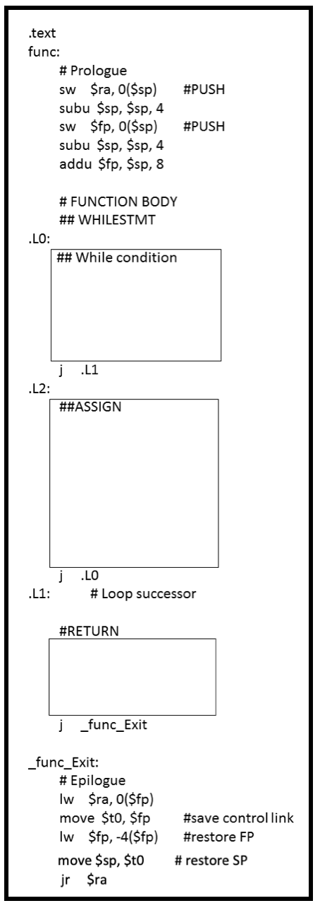

Homework 9
Due by 11pm on April 21st 2020
Homework assignments must be done individually. Collaboration on homework
assignments is not allowed.
Question 1
For the following function:
int func(int a, int b) {
while (a < b) {
a = a * 2;
}
return a;
}
Generate the MIPS code using the template below. You can assume parameters are passed by value, and the parameters are already stored on the stack. List any other assumptions you are making.

Question 2
Consider the following block of MIPS code:
.text
main:
lw $t0, a
lw $t1, b
addu $t2, $t1, $t0
sw $t2, ($sp)
subu $sp, $sp, 4
mult $t0, $t1
mflo $t1
sw $t1, ($sp)
subu $sp, $sp, 4
lw $t0 4($sp)
addu $sp, $sp, 4
lw $t1 4($sp)
addu $sp, $sp, 4
bgt $t0, $t1, L1
div $t1, $t0
j L2
L1:
div $t0, $t1
L2:
mflo $t0
sw $t0, c
Recover a block of code in Wumbo language from the MIPS code. You can assume a, b and c are global variables and the size of each variable is 4.